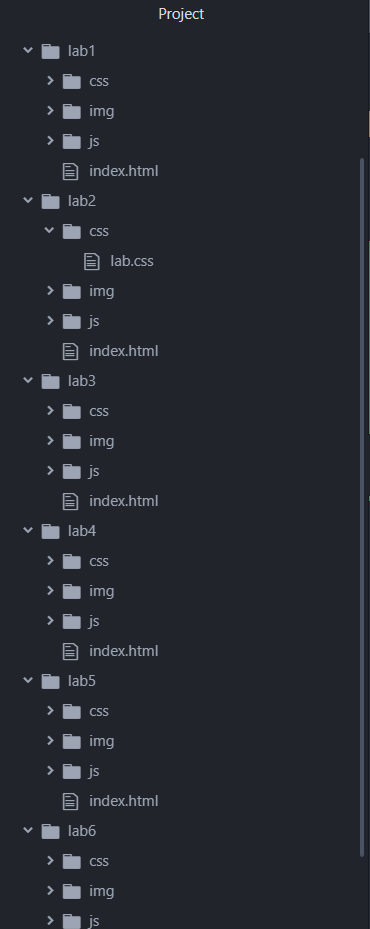
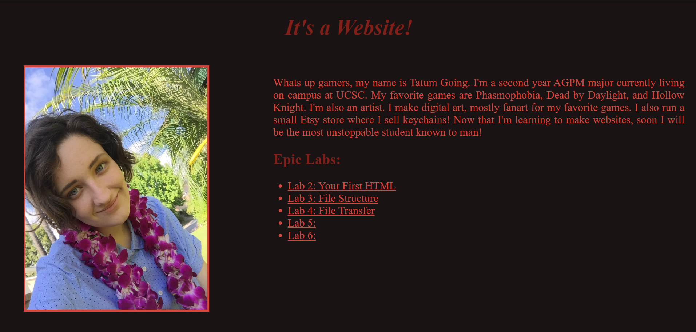
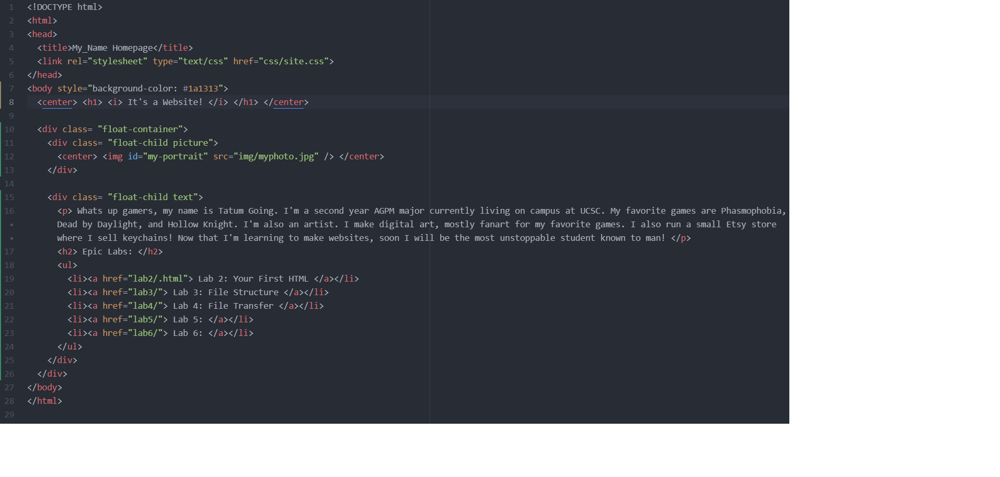
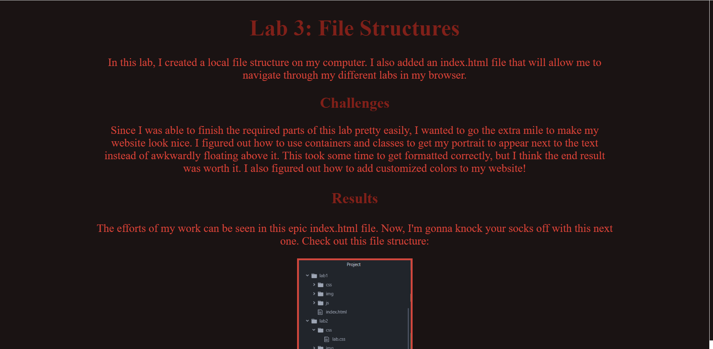
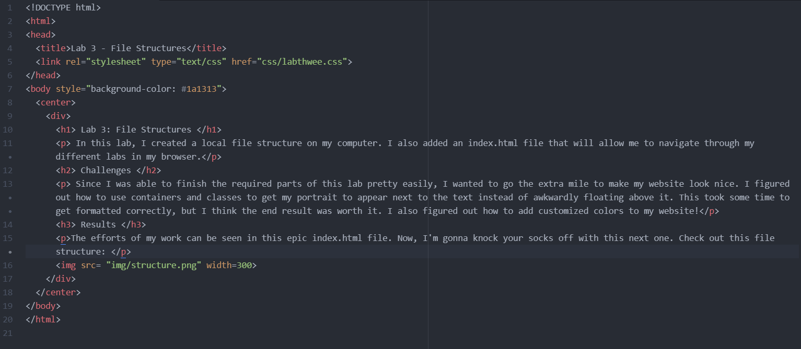

In this lab, I created a local file structure on my computer. I also added an index.html file that will allow me to navigate through my different labs in my browser.
Since I was able to finish the required parts of this lab pretty easily, I wanted to go the extra mile to make my website look nice. I figured out how to use containers and classes to get my portrait to appear next to the text instead of awkwardly floating above it. This took some time to get formatted correctly, but I think the end result was worth it. I also figured out how to add customized colors to my website!
The efforts of my work can be seen in this epic index.html file. Now, I'm gonna knock your socks off with this next one. Check out this file structure:
My cool file structure.
The HTML for my main page.
My main page.
The Lab 3 page.
The HTML for the Lab 3 page.